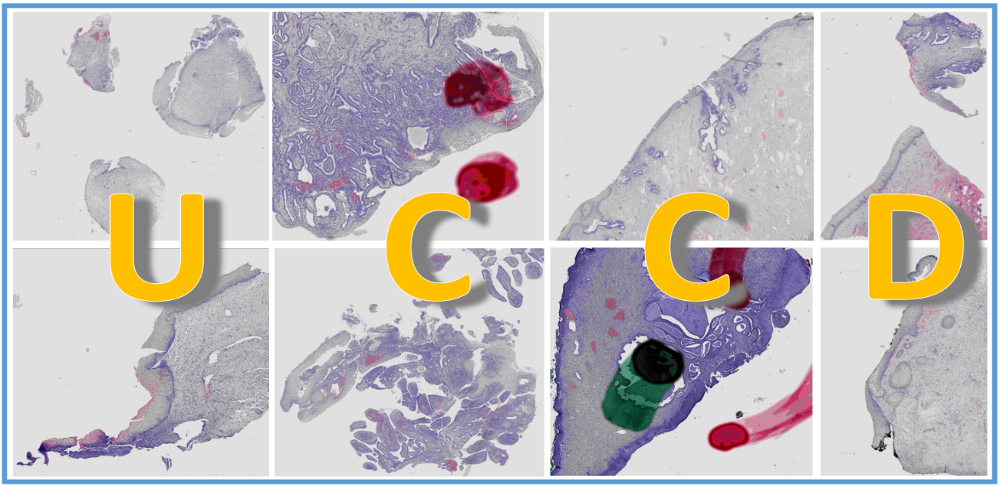
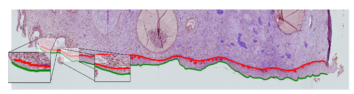
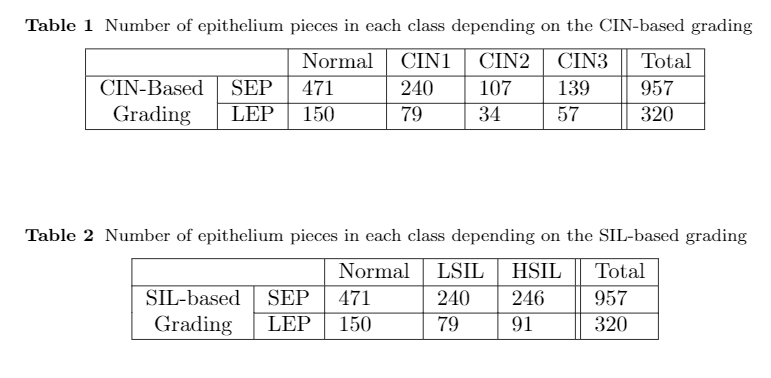

Istanbul Technical University
Signal Processing for Computational Intelligence Group
Uterine Cervical Cancer Database
Motivation

Cervical cancer caused by Human Papilloma Virus (HPV) is one of the preventable cancers with the help of periodic screening. Thanks to early diagnosis, many patients can survive and regain their health. It is very important to evaluate the Hematoxylin and Eosin (H&E) digital histopathology images used during these scans. At this point, the accuracy of the diagnosis can change the course of treatment. The development of AI systems that can assist pathologists in the diagnosis process has gained great importance. Based on this, we reveal a data set consisting of large-scale H&E images available to researchers worldwide. We hope that the methods developed through this data set can cover beautiful milestones for many helpful diagnoses.
Description

In our data set study, 128 whole slides obtained from 54 patients in the pathology laboratory of IMU Hospital were scanned with high resolution. Images were painted with HE Ki67 and p16 immunohistochemical stains. Digital images obtained under x20 and x40 optical zoom were recorded in TIFF format without any compression. The dimensions of the whole slide images range from 7,500x7,700 to 55,700x165,000. The whole slide images are difficult to process. There may be lesions of more than one class on a slide. For this reason, lesions were separated from the whole slide images (a). In addition, each lesion (b) was divided into small pieces and Small Epithelial Pieces (SEP) (c) were created. Our data set contains a total of 128 whole slides, 350 lesions and 957 SEP images.
The diagnosis for each lesion and SEP is given according to the CIN system. Diagnoses exist as independent diagnoses of two pathologists. In cases where they were unstable with pathologists, they presented another third diagnosis on Ki67 and p16 for consensus. Thus, our data set contains inter-observer variabilty. A way was followed in indexing digital images: Whole Slide Name (WSN)
Slide Lesion and Small Epitelium Pieces
TBA

TBA

Ground Truth
TBA
TBA
Conclusion
The authors would appreciate if you could cite their work if you use our dataset.
@article{albayrak,
title={A Whole Slide Image Grading Benchmark and Tissue Classification for Cervical Cancer Precursor Lesions with Inter-Observer Variability},
author={Albayrak, Abdulkadir and Unlu, Asli and Calik, Nurullah and Capar, Abdulkerim and Bilgin, Gokhan and Toreyin, Behcet Ugur and Muezzinoglu, Bahar and Turkmen, Ilknur and Durak-Ata, Lutfiye},
journal=
year=
}